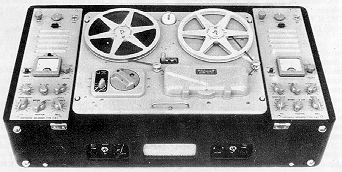

Vortexion Quality Equipment
|
TYPE C.B.L.
|

|
TYPE C.B.L.
|
Here is a versatile stereophonic recorder which has no equal in its price group.
IT CAN record monaurally or stereophonically with its own mixed inputs
from Gram, Radio or other sources and from high grade low impedance
balanced line microphones. With good
microphones, etc., the result is a suitable master for disc
manufacturers. "Before and After" monitoring is provided together with
adjustable metered bias for perfection.
IT CAN also make a recording on one track and then transfer it to the
other track while measuring and listening to it and adding one or two
more signals also metered.
IT CAN repeat the process and transfer this combined signal to the
first track with one or two more signals. Composers use it for this
purpose. One track may have music or commentary
and the other cueing signals or commentary and either may be altered
without the other.
IT CAN playback stereophonically or monaurally with its own amplifiers of 3 watts each.
Speeds 1¼/3¾/7½ i.p.s. Price: £172 0 0
Speeds 3¾/7½/15 i.p.s. Price: £180 0 0
The Vortexion W.V.B. is a high quality monaural machine with "Before
and After" monitoring. The recording inputs are a high sensitivity
socket for moving coil or ribbon microphone
and a high impedance socket for radio, etc., either of which can be
selected by a switch. Superimposing and echo work can be done and the
playback has reserve gain for abnormal
requirements. This model cannot be converted for stereo playback, but
it is a thoroughly reliable machine for the engineer specialising on
monaural work.
Speeds 1¼/3¾/7½ i.p.s. Price: £115 10 0
Speeds 3¾/7½/15 i.p.s. Price: £128 0 0
The Vortexion W.V.A. is a monaural machine which has a performance
equal in sound quality to the other models. It possesses all the
features of the W.V.B. except for "Before and
After" monitoring, Dubbing and Echoes. The recording being made can be
heard on the internal loudspeaker as in the W.V.B. and C.B.L. The
controls are uncomplicated.
Speeds 1¼/3¾/7½ i.p.s. Price: £96 7 0
Speeds 3¾/7½/15 i.p.s. Price: £107 3 0
All tape recorders have adjustable bias controls, low impedance mic.
inputs for unlimited lengths of cable, highly accurate position
indicators and meters to measure recording level and
bias.
VORTEXION LIMITED
257-263 The Broadway, Wimbledon, London, S.W.19
Telephones: LIBerty 2814 and 6242-3. Telegrams: " Vortexion, Wimble, London "